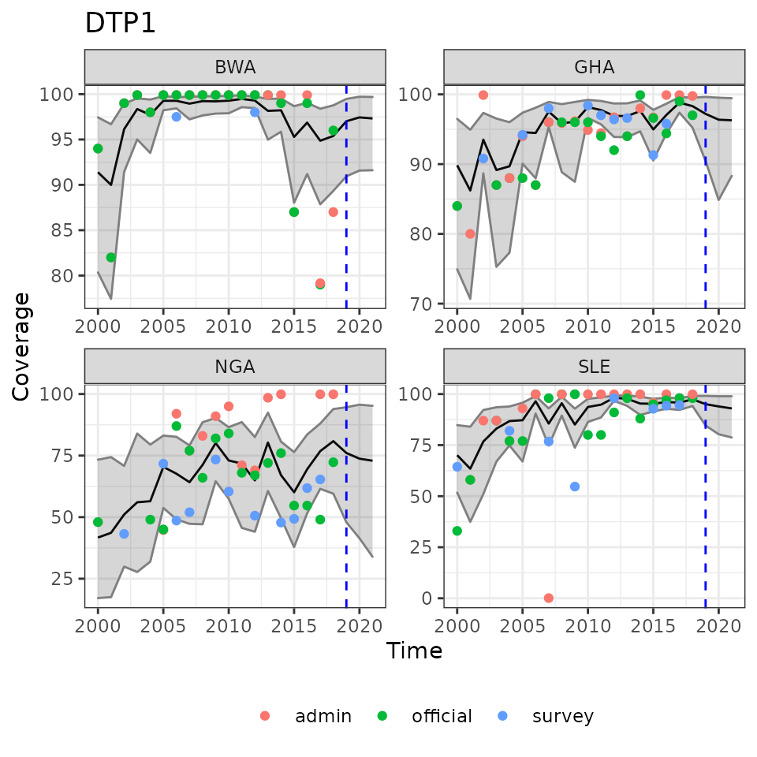

R: An introduction to the imcover packageintro.RmdNational estimates of immunization coverage are crucial for monitoring and evaluating coverage levels and trends, as well as immunization goals and targets, at the national and international levels. There are multiple potential sources of information related to immunization coverage, and the challenge is to develop a statistically-principled method to make use of different data sources while accounting for their uncertainties.
The goal of the imcover package is to provide access to data download, processing and modelling tools and to support a Bayesian statistical modelling approach to generate national estimates of immunization coverage from multiple time series of data on coverage. imcover is built as part of the open-source statistical computing and modelling language, R (https://cran.r-project.org/). This package is designed to support broadly replicable and reproducible analyses of immunization coverage.
This vignette will demonstrate some of the core functionality in the package, including:
imcover is not (yet) available for download from CRAN. It is currently in a private GitHub repository during development. Access can be granted to users for “beta testing.” Once downloaded, a user accesses the code library through R.
# load the package within the R environment
library(imcover)All functions are documented and the help and examples can be accessed within R using the standard command help or ?.
imcover was developed by WorldPop at the University of Southampton (https://www.worldpop.org/).
If a user does not have a dataset on their local computer, the first step in analysis is to acquire standardised data. Within imcover there is functionality to download several datasets from the WHO Immunization data portal (https://immunizationdata.who.int/listing.html). These datasets include official coverage reports, administrative records, as well as household survey datasets.
# download administrative and official records
cov <- download_coverage()
# download survey records
svy <- download_survey()As part of the download process, by default, several pre-processing steps are done to, e.g. reconcile differences in column names. In the case of survey datasets, a recall-bias adjustment is applied. The default processing behaviour can be changed by modifying the argument supplied to the download functions. Additionally, all the processing steps can be carried out using functions available in imcover if advanced users want more control over pre-processing.
The data files available from the WHO website require some additional cleaning before analysis. Notice that the data objects created by imcover can work with all standard R commands for selecting and modifying records.
# Further data cleaning of immunization records
# drop some record categories (PAB, HPV, WUENIC)
cov <- cov[cov$coverage_category %in% c("ADMIN", "OFFICIAL"), ]
cov$coverage_category <- tolower(cov$coverage_category) # clean-up
# create a combined dataset
dat <- rbind(cov, svy)
# remove records with missing coverage values
dat <- dat[!is.na(dat$coverage), ]
# mismatch in vaccine names between coverage and survey datasets
dat[dat$antigen == 'DTPCV1', 'antigen'] <- 'DTP1'
dat[dat$antigen == 'DTPCV2', 'antigen'] <- 'DTP2'
dat[dat$antigen == 'DTPCV3', 'antigen'] <- 'DTP3'ic data objectsA unique feature of imcover is that it creates and works with a custom data extension, which we refer to as an immunization coverage data frame or an ic.df. This type of object has all the functionality of a standard R data frame while having additional functionality to store attributes to make it easier to work with the immunization coverage data and to keep track of what processing has been done to the data.
# inspect a random sample of records
print(dat[sample(1:nrow(dat), size = 6), ])
#> region code year antigen coverage coverage_category doses
#> 207931 SEARO NPL 1989 TT2PLUS 21.00 admin NA
#> 140816 AFRO KEN 2020 ROTAC 84.25 admin 1259221
#> 22811 AFRO BFA 2016 DTP3 102.96 admin 769490
#> 83270 EMRO EGY 2006 VAD1 97.78 admin 1752483
#> 52075 WPRO CHN 1992 TT2PLUS 2.00 official NA
#> 152894 EMRO LBN 2019 DTP3 93.48 official NA
#> target_number name
#> 207931 NA Nepal
#> 140816 1494648 Kenya
#> 22811 747362 Burkina Faso
#> 83270 1792361 Egypt
#> 52075 NA China
#> 152894 NA Lebanon
#> antigen_description
#> 207931 Tetanus toxoid-containing vaccine, 2nd and subsequent doses
#> 140816 Rotavirus, last dose
#> 22811 DTP-containing vaccine, 3rd dose
#> 83270 Vitamin A, 1st dose
#> 52075 Tetanus toxoid-containing vaccine, 2nd and subsequent doses
#> 152894 DTP-containing vaccine, 3rd dose
#> coverage_category_description surveyNameEnglish evidence validity
#> 207931 Administrative coverage <NA> <NA> <NA>
#> 140816 Administrative coverage <NA> <NA> <NA>
#> 22811 Administrative coverage <NA> <NA> <NA>
#> 83270 Administrative coverage <NA> <NA> <NA>
#> 52075 Official coverage <NA> <NA> <NA>
#> 152894 Official coverage <NA> <NA> <NA>
#> Sample_Size surveyNameProduction collectBegin collectEnd cardsSeen
#> 207931 NA <NA> <NA> <NA> NA
#> 140816 NA <NA> <NA> <NA> NA
#> 22811 NA <NA> <NA> <NA> NA
#> 83270 NA <NA> <NA> <NA> NA
#> 52075 NA <NA> <NA> <NA> NA
#> 152894 NA <NA> <NA> <NA> NA
#> ageVaccination ageInterview sex adj_factor coverage_adj
#> 207931 <NA> <NA> <NA> NA NA
#> 140816 <NA> <NA> <NA> NA NA
#> 22811 <NA> <NA> <NA> NA NA
#> 83270 <NA> <NA> <NA> NA NA
#> 52075 <NA> <NA> <NA> NA NA
#> 152894 <NA> <NA> <NA> NA NA
# note the type object
class(dat)
#> [1] "ic.df" "data.frame"For example, the ic.df objects have helper functions to tabulate records,
# show all records
list_vaccines(dat) # note the download files contain many vaccine
#> [1] "BCG" "BCG-POST1DAY"
#> [3] "BCG-WIN1DAY" "DIPHCV4"
#> [5] "DIPHCV5" "DIPHCV6"
#> [7] "DTP1" "DTP2"
#> [9] "DTP3" "DTP4"
#> [11] "FIPV1" "FIPV2"
#> [13] "FLU_ALL" "FLU_CHILD1"
#> [15] "FLU_CHILD2" "FLU_CHRONIC_ADULT"
#> [17] "FLU_CHRONIC_ALL" "FLU_CHRONIC_PED"
#> [19] "FLU_ELDERLY" "FLU_HAJ"
#> [21] "FLU_HCW" "FLU_OTHER"
#> [23] "FLU_PW" "FLU_RESIDENT"
#> [25] "FULL" "FULL (+HB)"
#> [27] "FULL (+IPV +PENTA-POL-BOOSTER)" "FULL (+IPV+YFV)"
#> [29] "FULL (+PCV3)" "FULL (+ROTAC)"
#> [31] "FULL (+YFV)" "FULL (ALL EXCL PCV AND BOOSTERS)"
#> [33] "FULL (ALL EXCL PCV)" "FULL <1 YEAR"
#> [35] "FULL(+PCV)" "FULL(+PCV3+YFV)"
#> [37] "FULL(+ROTAC)" "FULL(+YF,+HEPB)"
#> [39] "FULL(+YF,+PCV,+ROTAC)" "FULL(+YFV)"
#> [41] "HEPB_BD" "HEPB_BDALL"
#> [43] "HEPB0" "HEPB1"
#> [45] "HEPB2" "HEPB3"
#> [47] "HEPB4" "HEPBB"
#> [49] "HEPBBX" "HIB1"
#> [51] "HIB2" "HIB3"
#> [53] "HIB4" "HPV_FEM"
#> [55] "HPV_MALE" "IPV"
#> [57] "IPV1" "IPV1_FRAC"
#> [59] "IPV1X" "IPV2"
#> [61] "IPV2_FRAC" "IPV3"
#> [63] "IPV4" "JAPENC"
#> [65] "JAPENC_1" "JAPENC_C"
#> [67] "MCV1" "MCV2"
#> [69] "MCV2X" "MCV3"
#> [71] "MEN_A_CONJ" "NONE"
#> [73] "OPV" "PAB"
#> [75] "PCV1" "PCV2"
#> [77] "PCV3" "PCV4"
#> [79] "PERCV_PW" "PERCV4"
#> [81] "POL0" "POL1"
#> [83] "POL1X" "POL2"
#> [85] "POL3" "POL3+IPV1"
#> [87] "POL4" "POL4+IPV1"
#> [89] "RCV1" "RCV1X"
#> [91] "RCV2" "RCV2X"
#> [93] "RCV3" "ROTA1"
#> [95] "ROTA2" "ROTAC"
#> [97] "ROTACX" "TT1"
#> [99] "TT1+" "TT2"
#> [101] "TT2+" "TT2PLUS"
#> [103] "TT3" "TT4"
#> [105] "TT5" "TTCV4"
#> [107] "TTCV5" "TTCV6"
#> [109] "TTT5" "TTTT10"
#> [111] "TTTTT+" "TYPHOID"
#> [113] "TYPHOID_CONJ" "VAD1"
#> [115] "YFV"Or to easily filter the records. Here we will subset the data for five core vaccines and a subset of time points.
# subset the records by vaccine and year for all countries
dat <- ic_filter(dat,
vaccine = c("DTP1", "DTP3", "MCV1", "MCV2", "PCV3"),
time = 2000:2018)
# cross-tabulations of source and vaccine
table(dat$coverage_category, dat$antigen)
#>
#> DTP1 DTP3 MCV1 MCV2 PCV3
#> admin 3020 3376 3320 2056 936
#> official 3061 3508 3489 1997 967
#> survey 594 643 637 56 163Other specialised methods are available to filter out records for a country after the year of national introduction.
# subset records based on year of vaccine introduction
dat <- filter_yovi(dat)
table(dat$year, dat$antigen) # notice year of introduction for PCV3
#>
#> DTP1 DTP3 MCV1 MCV2 PCV3
#> 2000 310 377 353 14 0
#> 2001 291 353 345 112 0
#> 2002 281 350 340 112 0
#> 2003 302 378 368 127 0
#> 2004 343 396 398 148 2
#> 2005 369 420 416 166 2
#> 2006 341 385 384 166 3
#> 2007 372 419 421 190 8
#> 2008 351 391 385 187 12
#> 2009 359 401 398 200 28
#> 2010 357 402 398 207 68
#> 2011 374 411 408 215 89
#> 2012 373 416 414 231 136
#> 2013 363 394 394 243 165
#> 2014 365 398 393 254 194
#> 2015 367 398 397 286 234
#> 2016 378 411 408 301 261
#> 2017 396 421 420 322 287
#> 2018 383 406 406 336 283Some further pre-processing of immunization data has been found to be necessary in preparation for the statistical modelling. We introduce functions to make it easy to carry out these steps.
Firstly, some records observe inconsistencies in the levels of coverage between multi-dose vaccines. To maintain consistency, where coverage of later doses cannot exceed earlier doses, we model the ratio between first and third dose. In this example, we only adjust DTP1 and DTP3, but other multi-dose vaccines could be processed in a similar manner.
# adjustment - use ratio for DTP3
dat <- ic_ratio(dat, numerator = 'DTP3', denominator = 'DTP1')The ic.df object will now store a note that this processing step has been carried out so that the ratio is back-transformed and that coverage estimates and predictions are adjusted appropriately.
Secondly, we need to force coverage estimates to lie between 0% and 100%.
# maintain coverage between 0-100%
dat <- ic_adjust(dat, coverage_adj = TRUE)The core of imcover is the functionality to fit a Bayesian statistical model of multiple time series. The sources of coverage data (in this example administrative, official and surveys) are taken as multiple, partial estimates of the true, unobserved immunization coverage in a country. A Bayesian estimation approach allows us to incorporate these multiple datasets, place prior beliefs on which sources are more reliable, share information between countries, and to quantify uncertainty in our estimate of the latent immunization coverage.
imcover provides an interface to Stan (https://mc-stan.org/) for statistical computation. This means that, in addition to imcover, many of the tools for assessing model performance and visualizing results from Stan will work for imcover results.
In this demonstration will start by fitting a model to a single region of data using ic_fit by passing in the ic.df object and several arguments that control the posterior sampling.
options(mc.cores = parallel::detectCores()) # enable parallel processing
# Fit model to a single region of data
fit1 <- ic_fit(dat[dat$region == 'AFRO', ],
chains = 4,
iter = 2000,
warmup = 1000)After fitting the model, we can work with the parameter estimates and estimates of coverage. For example, we can easily make graphs of coverage estimates. Notice how imcover has a generic function defined to specially handle objects returned by ic_fit.
# Plot of coverage
plot(ic_filter(fit1, vaccine = 'DTP1',
country = c('BWA', 'SLE', 'GHA', 'NGA')),
ncol = 2)Example results of modelled immunization coverage estimates for selected countries and vaccines.
The main output of the model is a table of coverage estimates for each country, vaccine, and time point along with uncertainty around each estimate. We can extract these data as a table, save them to a data frame, or write them out to a file for use in a report.
# Extracting coverage estimates
ic <- ic_coverage(fit1,
stat = "quantile", # customise the summary function
probs = c(0.025, 0.5, 0.975))
head(ic, 10)
#> country time vaccine 2.5% 50% 97.5%
#> mu[1] AGO 2000 DTP1 48.71852 67.83581 81.76032
#> mu[2] AGO 2001 DTP1 32.13896 62.44410 84.02413
#> mu[3] AGO 2002 DTP1 39.57595 70.26706 86.64744
#> mu[4] AGO 2003 DTP1 44.89012 72.22582 89.35642
#> mu[5] AGO 2004 DTP1 52.35678 75.80592 91.26388
#> mu[6] AGO 2005 DTP1 52.34921 74.65095 87.82431
#> mu[7] AGO 2006 DTP1 55.65966 78.36558 90.90806
#> mu[8] AGO 2007 DTP1 80.96794 88.97504 94.92721
#> mu[9] AGO 2008 DTP1 91.13137 96.88844 98.99340
#> mu[10] AGO 2009 DTP1 86.65440 94.36350 98.19124Once we have the fitted model, we can also use it to predict coverage to time points in the near future.
# Predict for future time points (3 years post 2018)
fit1 <- predict(fit1, t = 3) # update icfit to include 'prediction' info
# Update the graph
# Automatically include fitted estimates, observed data, and predictions
plot(ic_filter(fit1, vaccine = 'DTP1',
country = c('BWA', 'SLE', 'GHA', 'NGA')),
ncol = 2)
Example reults of estimated immunization coverage with future predictions to the right of the dashed lines. Overlaid with observed data points.
This vignette has introduced the core functionality of the imcover package and its use in modelling national time series of immunization coverage. Providing a coordinated toolset to download, process, and model immunization data should allow for consistent analyses whose methods are transparent and replicable.
There are a few additional options in the package. For instance, multiple regions of data can be supplied to ic_fit and then region-specific models can be executed. In the posterior analyses, population-weighted regional summaries of coverage can also be calculated. Similar to ic_coverage, users can customize the summary functions. Finally, the Stan models allow for significant flexibility in defining statistical models. The package specifies reasonable default values for the models to replicate our analyses, but users can explore the sensitivity of these settings by easily adjusting the parameters within R and re-running the models without having to interact with the Stan code.
Feedback on the package is welcome. Please email Chris Jochem (w.c.jochem@soton.ac.uk)
#> R version 4.1.3 (2022-03-10)
#> Platform: x86_64-pc-linux-gnu (64-bit)
#> Running under: Ubuntu 20.04.4 LTS
#>
#> Matrix products: default
#> BLAS: /usr/lib/x86_64-linux-gnu/blas/libblas.so.3.9.0
#> LAPACK: /usr/lib/x86_64-linux-gnu/lapack/liblapack.so.3.9.0
#>
#> locale:
#> [1] LC_CTYPE=en_GB.UTF-8 LC_NUMERIC=C
#> [3] LC_TIME=en_GB.UTF-8 LC_COLLATE=en_GB.UTF-8
#> [5] LC_MONETARY=en_GB.UTF-8 LC_MESSAGES=en_GB.UTF-8
#> [7] LC_PAPER=en_GB.UTF-8 LC_NAME=C
#> [9] LC_ADDRESS=C LC_TELEPHONE=C
#> [11] LC_MEASUREMENT=en_GB.UTF-8 LC_IDENTIFICATION=C
#>
#> attached base packages:
#> [1] stats graphics grDevices utils datasets methods base
#>
#> other attached packages:
#> [1] imcover_0.2.4
#>
#> loaded via a namespace (and not attached):
#> [1] Rcpp_1.0.7 prettyunits_1.1.1 ps_1.6.0
#> [4] rprojroot_2.0.2 digest_0.6.29 utf8_1.2.2
#> [7] V8_3.4.2 cellranger_1.1.0 R6_2.5.1
#> [10] stats4_4.1.3 evaluate_0.15 highr_0.9
#> [13] ggplot2_3.3.5 pillar_1.7.0 rlang_1.0.2
#> [16] readxl_1.3.1 curl_4.3.2 rstudioapi_0.13
#> [19] callr_3.7.0 jquerylib_0.1.3 rmarkdown_2.13
#> [22] pkgdown_1.6.1 labeling_0.4.2 textshaping_0.3.5
#> [25] desc_1.4.0 stringr_1.4.0 loo_2.5.1
#> [28] munsell_0.5.0 compiler_4.1.3 xfun_0.30
#> [31] rstan_2.21.2 pkgconfig_2.0.3 systemfonts_1.0.4
#> [34] pkgbuild_1.3.1 rstantools_2.1.1 htmltools_0.5.2
#> [37] tidyselect_1.1.0 tibble_3.1.6 gridExtra_2.3
#> [40] codetools_0.2-18 matrixStats_0.61.0 fansi_1.0.3
#> [43] crayon_1.5.1 dplyr_1.0.5 withr_2.5.0
#> [46] grid_4.1.3 jsonlite_1.8.0 gtable_0.3.0
#> [49] lifecycle_1.0.1 magrittr_2.0.3 StanHeaders_2.21.0-7
#> [52] scales_1.1.1 RcppParallel_5.1.5 cli_3.2.0
#> [55] stringi_1.7.6 cachem_1.0.6 farver_2.1.0
#> [58] fs_1.5.2 bslib_0.2.4 ellipsis_0.3.2
#> [61] ragg_1.1.3 generics_0.1.0 vctrs_0.4.0
#> [64] tools_4.1.3 glue_1.6.2 purrr_0.3.4
#> [67] abind_1.4-5 processx_3.5.3 parallel_4.1.3
#> [70] fastmap_1.1.0 yaml_2.3.5 inline_0.3.19
#> [73] colorspace_2.0-3 memoise_2.0.1 knitr_1.38
#> [76] sass_0.3.1